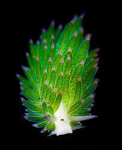

Ovelha do Mar
Costasiella kuroshimae

A "Ovelha do Mar" não é uma ovelha, mas sim uma espécie de lesma do mar.
Apesar de não ser uma planta, elas conseguem realizar o processo de fotossíntese.
Elas são extremamente pequenas, seu comprimento é de 5mm.
Home